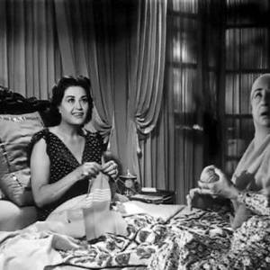

بلاي ليست| في عيد ميلاده.. أشهر أغاني فضل شاكر
فوجئ مستمعوه بقرار اعتزاله الفن نهائيا عام 2012 رغم صغر سنه وأغانيه المشهورة والمتميزة التي ظلت محفورة حتى الآن في الذاكرة، وعدد ألبوماته التي وصلت لنحو 11 ألبوما إلا أن فضل شاكر عبَّر عن ذلك في أحد بياناته قائلا: "اخترت الاعتزال لأشتري آخرتي بدنياي".
بلاي ليست| أجمل أغاني "حليم" في ذكرى رحيله
صوته ذو خامة مختلفة ومميزة مليئا بالدفء والعذوبة، ما جعله محفورا حتى الآن في ذاكرة كل الأجيال، وتميز العندليب الأسمر بإحساسه القوي وصدق تعبيره، الذي جعل مستمعه متأثرا بكل كلمات أغانيه وألحانها، ولم يقتصر الأمر على الطرب فقط ولكنه أمتع الكثيرين بأدائه التمثيلي في أفلامه، التي تظل تعُرض حتى الآن على شاشات التليفزيون وينتظرها العديد من المتابعين.
شاعر الأطلال.. إبراهيم ناجي طبيب بدرجة مبدع
كلماته ترجمة لـنبضات قلبه وبراعة شعرية استطاع أن يطوع بها ألفاظه، ويجعلها راوية تقص على قارئها مناسبة حدثت في يومياته، فنشأة شاعر الأطلال إبراهيم ناجي في أسرته المثقفة أعانته على القراءة والإطلاع فأحب الشعر، وسلك طريقه فيه بخطى واسعة بعد حصوله على بكالوريوس الطب من جامعة القاهرة.
الخطوط الأردنية تقدم حلولا ساخرة لـ12 ساعة طيران دون إلكترونيات: تأمل
تستغرق الرحلة من الأردن إلى الولايات المتحدة 12 ساعة، وبعد قرار حظر الإلكترونيات على متن الطائرات القادمة من أمريكا لعمان، لم تنس الخطوط الأردنية ركابها فقدمت وسيلة مختلفة لتسليتهم، ورجعت بالزمن إلى ما قبل التكنولوجيا.

في ذكرى ميلادها.. 13 معلومة عن عقيلة راتب
"عائلة زيزي، ليلة الزفاف، حب ودموع، القاهرة 30".. أفلام عدة شاركت فيهم الممثلة الكبيرة عقيلة راتب وعلى الرغم من صغر أدوراها إلا أنها استطاعت ترك بصمة كبيرة في تاريخ السينما المصرية والعربية، فضلا عن أدوار بطولة أخرى أظهرت فيها مهاراتها وموهبتها التمثيلية المميزة.
بالصور| فنان تركي يجمع بين الخيال والطبيعة في صور فوتوغرافية
جمع حسين شاهين الفنان التركي بين الخيال والطبيعة، في مجموعة صور فوتوغرافية، مستخدمًا موهبته في تجسيد الصور الخيالية.
ودمج "شاهين" بين عدة صور، فجمع بين البحر والجبل، والصحراء، ووضع قروش في وسط الطريق، وفقًا لموقع "بورد باندا".